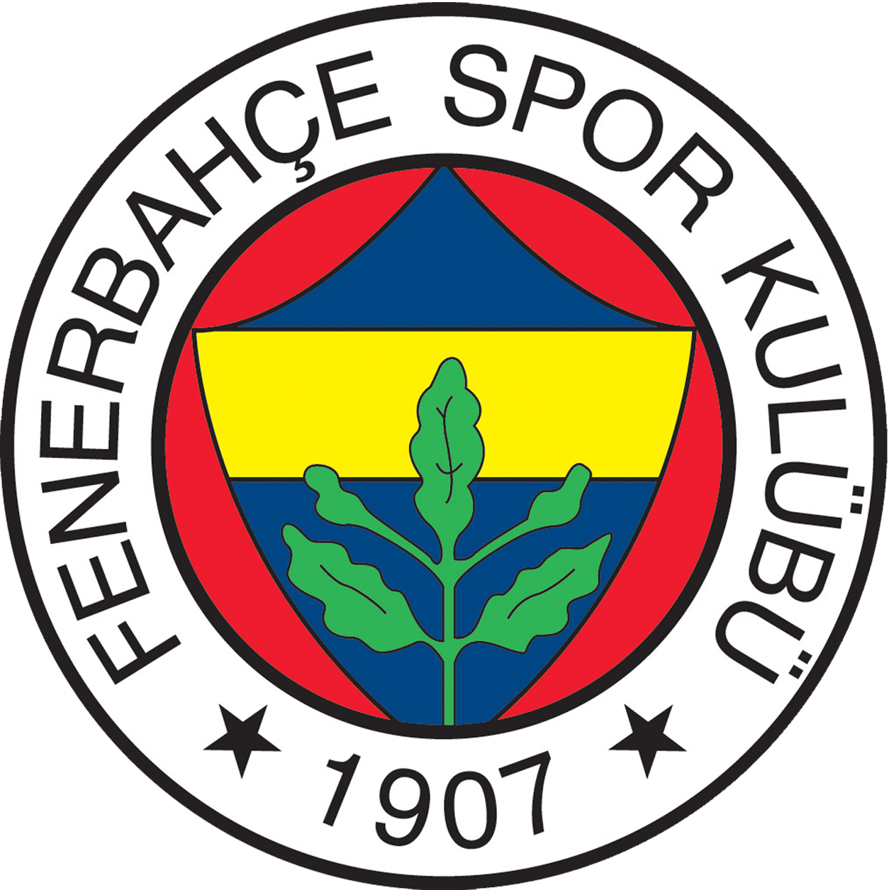

FENERBAHÇE

Dünyanın En Büyük Spor Kulübü
Fenerbahçe Spor Kulübü, 1907 yılında İstanbul'un Kadıköy semtinde kurulan, Türkiye'nin en köklü ve en büyük spor camialarından biridir. Sadece bir futbol kulübü değil, yarıştığı her branşta iddialı olan bir "Spor Kulübü" kimliğiyle tanınır.
Branşlar ve Detaylar
- Kuruluş: 1907
- Stadyum: Ülker Stadyumu Şükrü Saracoğlu Spor Kompleksi
- Branşlar: Futbol, Basketbol, Voleybol, Kürek, Yelken, Yüzme